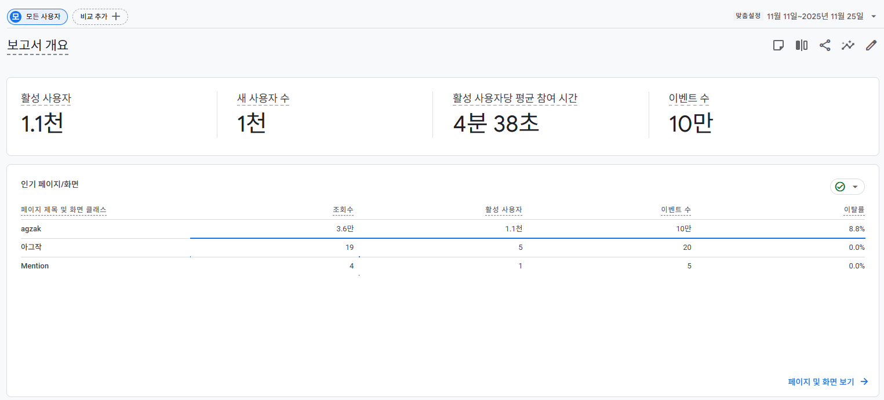
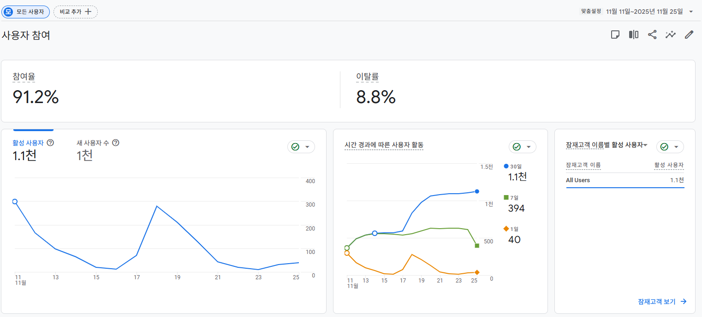
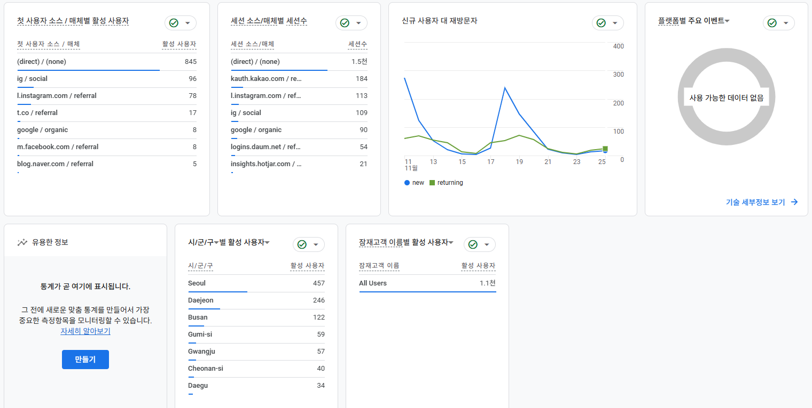
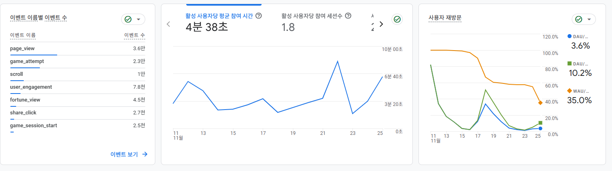
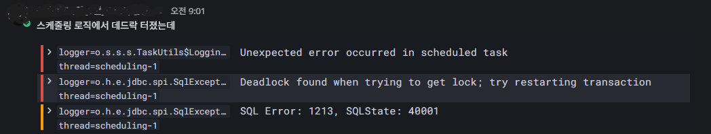
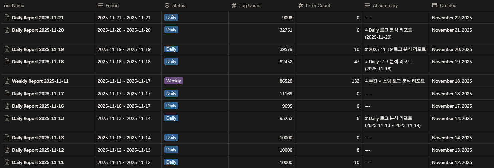
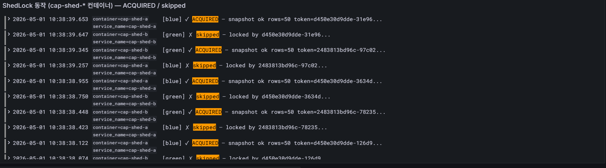
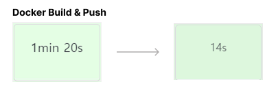

| Before | After (ShedLock 적용) | |
|---|---|---|
| 자정 데드락 알람 | 매일 1회 | 재발 0건 |
| 랭킹 스냅샷 누락 | 발견됨 | 0건 |
| 스케줄러 중복 실행 | 두 컨테이너 모두 | 한쪽만 + 즉시 skip |
| Before | After | |
|---|---|---|
| 오늘 TOP 100 응답 | 풀스캔 + 정렬 | ZREVRANGE 단건 |
| "내 등수" 조회 | SELECT + 정렬 | ZREVRANK O(log N) |
| 14일 Slow Query | 측정됨 | 0건 유지 |



